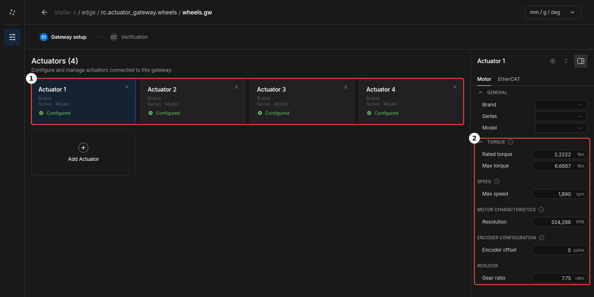
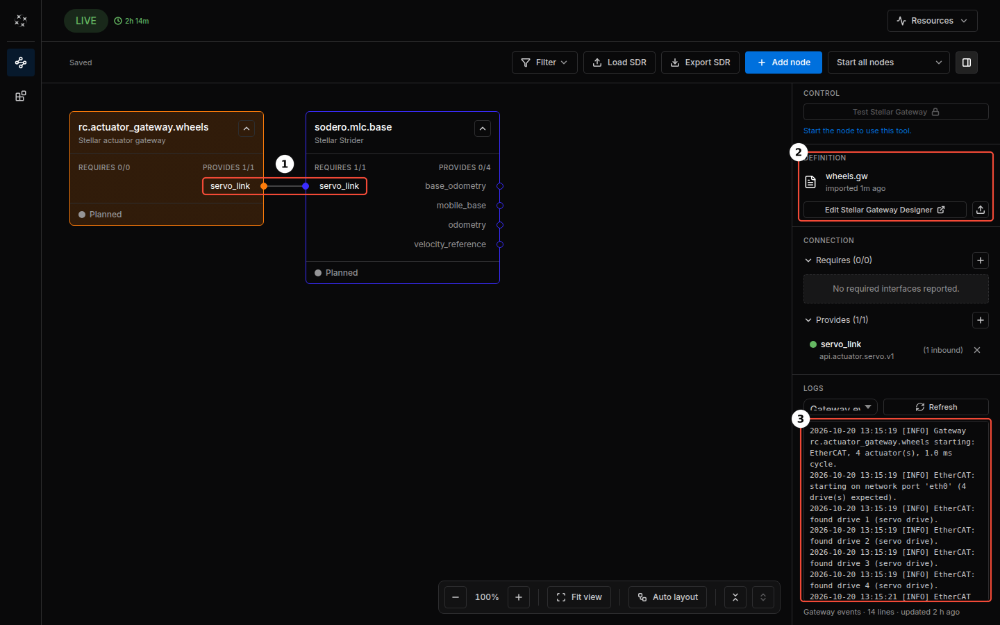
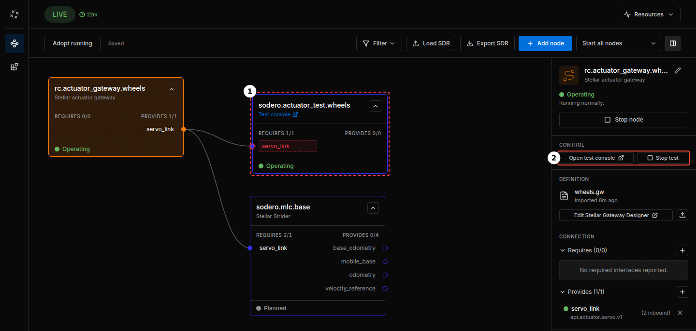
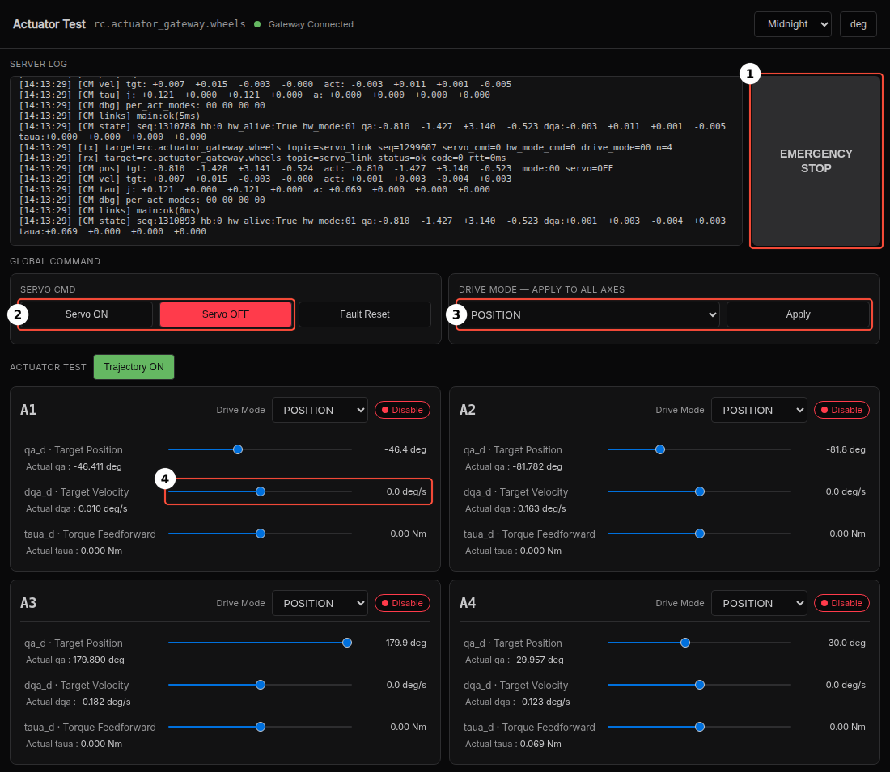

EtherCAT Mobile Base¶
This tutorial drives a four-wheel skid-steer base with four EtherCAT servo drives from Stellar X. It is the Quick Start system on real motors: Strider still drives the base, and an EtherCAT gateway takes the place of the simulation gateway. You will:
- wire the four drives to Stellar X,
- add the gateway and Strider on Stellar Station and load their example documents,
- bring up the EtherCAT network,
- turn each wheel on its own from the gateway's test console, and
- jog the wheels with Strider.
flowchart TB
B["Your browser<br>Stellar Station · Strider"]
subgraph SX ["Stellar X"]
S["Strider<br>sodero.mlc.base"] -- servo_link --> G["EtherCAT gateway<br>rc.actuator_gateway.wheels"]
end
subgraph EC ["EtherCAT line"]
direction LR
D1["Drive 1<br>front left"] --> D2["Drive 2<br>front right"] --> D3["Drive 3<br>rear left"] --> D4["Drive 4<br>rear right"]
end
B --> S
G -- "EtherCAT Out" --> ECReal motors move. Lift the base so that its wheels are off the ground until every wheel turns the right way. Wire the drives' safe torque off (STO) and an emergency stop, and keep the emergency stop within reach.
Before You Start¶
| You need | Details |
|---|---|
| Stellar X | Powered on and reachable from your PC (Network Settings). In this guide its address is 192.168.60.18. |
| Four servo drives | EtherCAT drives with the CiA 402 profile and cyclic synchronous velocity (CSV). Their RxPDO must include Target velocity (0x60FF) (EtherCAT Gateway › What You Need). |
| Motors | One motor per wheel. The example uses motors with a rated torque of 2.2222 Nm, a peak torque of 6.6667 Nm, a maximum speed of 1,890 rpm and an encoder with 524,288 counts per turn, each behind a 7.75 : 1 gear. |
| A four-wheel base | The example base has wheels of 0.098 m radius at ±0.131 m front and back and ±0.188 m left and right of the base center. |
| Example files | wheels.gw (EtherCAT gateway with four drives) and base.sddm (Strider). |
Your drives, motors and base are probably not the example's. Load the example files anyway and change the values in the Gateway Designer and Stellar Designer, as the steps below describe.
Step 1: Wire the Drives¶
- Plug Stellar X's EtherCAT Out port into the IN port of the front-left drive.
- Connect its OUT port to the IN port of the front-right drive, then on to the rear-left and the rear-right drive.
- Power the drives and release their STO and the emergency stop.
The cable order is the actuator order of the gateway, and the Strider document assigns the actuators to the wheels:
| Drive on the cable | Gateway actuator | Wheel |
|---|---|---|
| 1st | 1 (index 0) | fl, front left |
| 2nd | 2 (index 1) | fr, front right |
| 3rd | 3 (index 2) | rl, rear left |
| 4th | 4 (index 3) | rr, rear right |
Do not use a network switch. EtherCAT frames must pass through the drives in a line (EtherCAT Gateway › Wire the Drives).
Step 2: Add the Gateway and Load wheels.gw¶
- Open
http://192.168.60.18in your browser. - Click Add node, choose Gateway › Actuator gateway and click Next. Name it
wheelsand click Add node (Quick Start › Step 1). - Select
rc.actuator_gateway.wheels. In its inspector, click the upload icon in DEFINITION (Import .gw), choosewheels.gwon From your PC and click Import. -
Click Edit Stellar Gateway Designer to check the document.

① four actuators, one per drive in cable order ② the Motor tab of actuator 1 The gateway has four actuators ①, one per drive. Every actuator has the same Motor tab ②:
Field Example value Rated torque 2.2222 Nm Max torque 6.6667 Nm Max speed 1,890 rpm Resolution 524,288 PPR Encoder offset 0 pulse Gear ratio 7.75 The EtherCAT tab of each actuator holds the drive's position on the cable (Idx 0 to 3), its label (
drive_fltodrive_rr) and the PDO mapping: the six RxPDO and the six TxPDO objects listed in Process Data, including Target velocity (0x60FF). -
If your hardware differs, change it here: select your drive in the EtherCAT tab and enter your motor in the Motor tab of each actuator (EtherCAT Gateway › Create the Gateway Document).
- Open 02 Verification, click Verify and fix any errors. Then click the back arrow to return to the Station.

Step 3: Add Strider and Connect It¶
- Click Add node, choose Controller › Strider and click Next. Name it
baseand click Add node. - Select
sodero.mlc.base, click the upload icon in DEFINITION (Import .sddm), choosebase.sddmand click Import. - Connect the two nodes: drag from the Strider's
servo_linkto the gateway'sservo_link, or click Auto-connect next toservo_linkin the Strider's inspector.


base.sddm describes the example base: a skid-steer chassis with four drive wheels, 0.098 m wheel radius and 17 kg. For your own base, select sodero.mlc.base, click Edit Stellar Designer and enter its dimensions and limits (Mobile Robot (.sddm)).
Step 4: Start the Gateway¶
- Select the gateway and click Start node. Wait until its state is Operating.
-
In its LOGS (stream Gateway events) ③, check that all four drives answered and reached operation:
Gateway rc.actuator_gateway.wheels starting: EtherCAT, 4 actuator(s), 1.0 ms cycle. EtherCAT: starting on network port 'eth0' (4 drive(s) expected). EtherCAT: found drive 1 (…). EtherCAT: found drive 2 (…). EtherCAT: found drive 3 (…). EtherCAT: found drive 4 (…). EtherCAT ready: 4 drive(s) operational, 1.0 ms cycle.Each found drive line names the drive as the drive reports itself.
If the gateway stops before EtherCAT ready, its log says why: no cable link, a drive missing from the chain, a PDO mapping that does not match the drive, or a drive that refuses the configuration. See EtherCAT Gateway › Troubleshooting.
Step 5: Test the Wheels with the Test Console¶
The gateway's test console turns single actuators without a controller. Check every wheel with it before Strider drives them.
-
Select the gateway and click Test Stellar Gateway in its CONTROL section. The test console opens in a new browser tab.

① the test console, connected to the gateway's servo_link ② the gateway's test console buttons While the test runs, the console is a node of the graph,
sodero.actuator_test.wheels①, and the gateway's CONTROL section shows Open test console and Stop test ②. The node has a red dashed outline because it is not part of your saved graph. It goes away when the test ends; do not add it to the graph with Adopt running. -
In the console, check that the top bar shows Gateway Connected and that there is one card per actuator, A1 to A4. Card A1 is actuator 1, the first drive on the cable.

① EMERGENCY STOP ② Servo ON and Servo OFF ③ the drive mode of all actuators ④ the target velocity of actuator 1 -
Under DRIVE MODE — APPLY TO ALL AXES ③, choose VELOCITY and click Apply.
- Click Servo ON ②. The indicator on every card changes from Disable to Enable, and the gateway's log shows Servo ON: all 4 drive(s) enabled.
- On card A1, press and hold the dqa_d · Target Velocity slider ④ and drag it to the right, to about 60 deg/s. The wheel turns while you hold the mouse button and stops when you release it.
- Do the same on cards A2, A3 and A4.


Each card must turn its own wheel (Step 1) forward, the way the base drives forward. At 60 deg/s a wheel needs 6 s for one turn.
| What you see | Cause and fix |
|---|---|
| A different wheel turns | The cable order does not match the wheel order. Rewire the drives in the order of Step 1. |
| The wheel turns backward | The motor is mounted the other way round. Invert its direction in the drive, for example with the drive's polarity parameter as a start-up SDO in the EtherCAT tab. Leave the influence factor in the Strider document at 1 (Mobile Robot › Actuator Mapping). |
| One turn takes clearly more or less than 6 s | Gear ratio or Resolution in the gateway is wrong. |
| The cards stay at Disable, and the gateway's log shows Servo ON failed | A drive does not enable: check its STO and enable inputs, the emergency stop and its main power. |
After a change to the gateway document, stop the test, restart the gateway and test again.
When every wheel passes, click Servo OFF. Then click Stop test in the gateway's CONTROL section. Closing the console's tab does not end the test.
Test Stellar Gateway works only while no robot controller runs on Stellar X, and starting a controller ends the test. EMERGENCY STOP ① quick-stops all drives and switches their servo off; click it again to release it.
Step 6: Jog the Wheels with Strider¶
- Select the Strider and click Start node. The gateway's log shows Robot controller connected.
- In the Strider's inspector, click Strider in CONTROL and open the Drive page (Strider › Jog the Base).
- Under Drive Mode, click Twist. Under Servo / Safety, switch Servo On. The gateway's log shows Servo ON: all 4 drive(s) enabled.
- Set Linear Velocity Limit to a low value, such as 0.1 m/s.
- Press and hold Forward (W) for a moment. All four wheels turn forward.
- Press and hold Turn Left (A). The left wheels turn backward and the right wheels forward.
The wheels passed the test console, so a wrong wheel or direction here comes from the Strider document: its actuator mapping must assign actuators 1 to 4 to fl, fr, rl and rr, each with the influence factor 1 (Mobile Robot › Actuator Mapping). If the wheels turn too fast or too slow, check the wheel radius in the Strider document.
When every wheel turns the right way, switch the servo off and click Idle. Put the base on the ground and drive it slowly, with the limits still low.
What's Next¶
| Next step | Page |
|---|---|
| Every Strider control, odometry calibration and programs | Strider |
| Localize the base on a map and drive it to goals | Localization and Navigation |
| EtherCAT parameters, process data and all gateway messages | EtherCAT Gateway |
| Your own base's dimensions, wheels and limits | Mobile Robot (.sddm) |